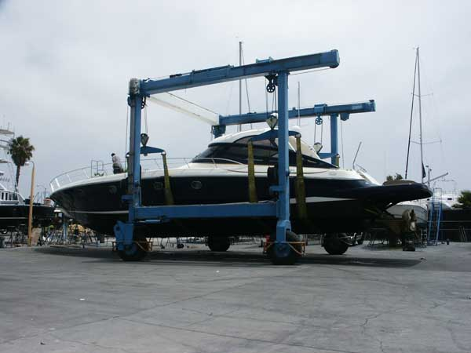

Launching the Sunseeker

Are these “Spinners” making you dizzy?

Beautiful Props
Previous |
Next
©
1999 The BoatYard, Inc. all rights reserved. Copying any portion
of this site without written permission is expressly forbidden.
The BoatYard 13555 Fiji Way Marina del Rey, CA 90292-6952
Trademarks, Service
marks, and Copyrights are the property
of their owners and are used for descriptive purposes only.